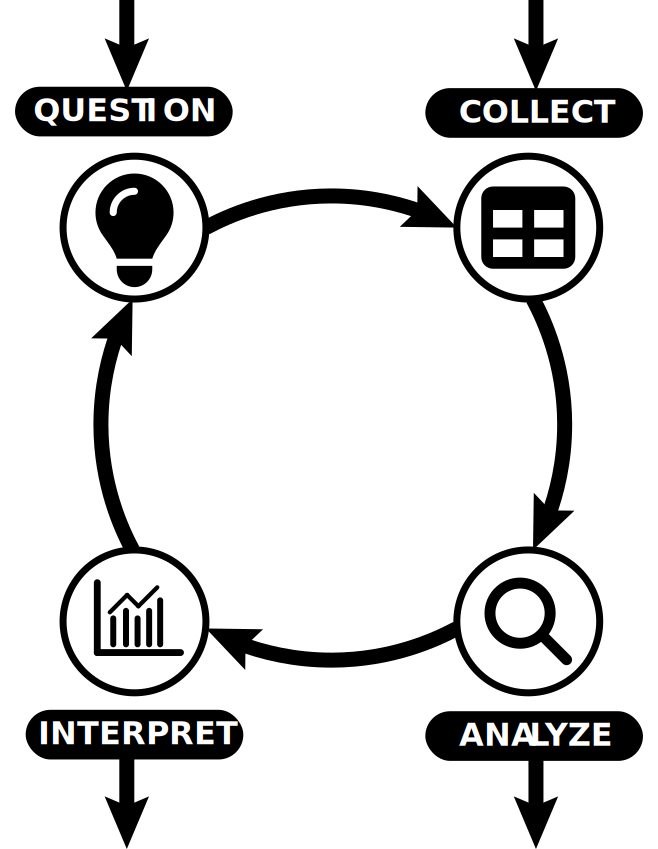
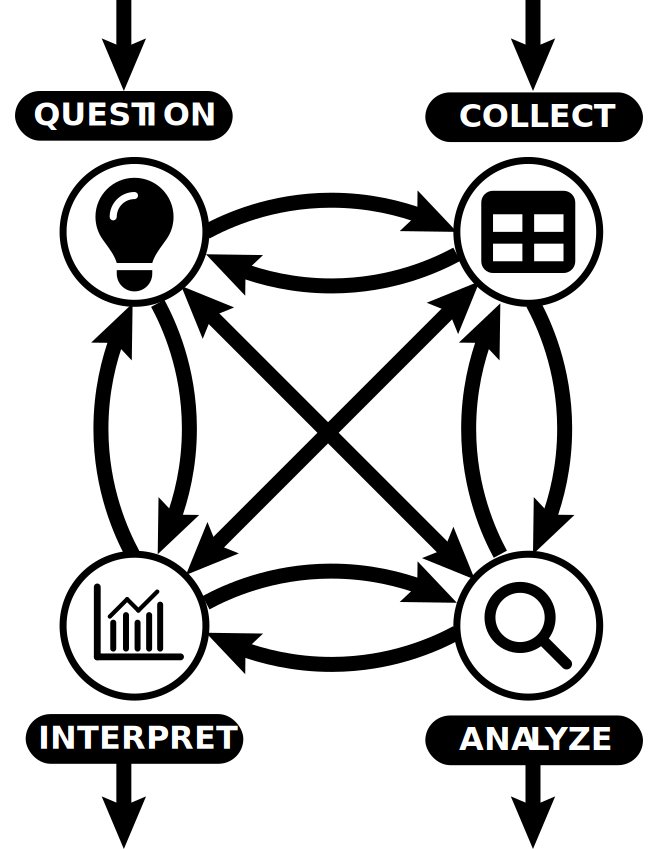
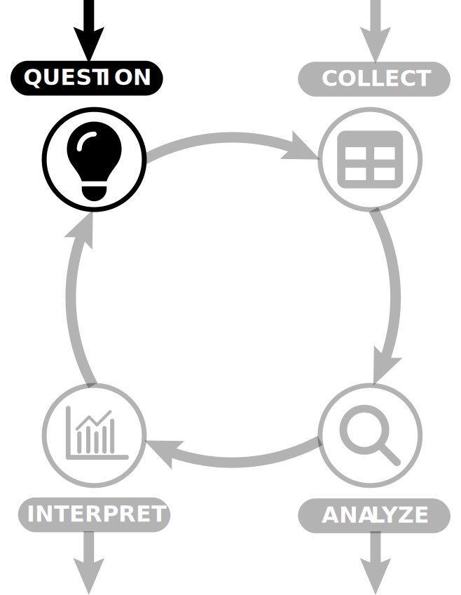
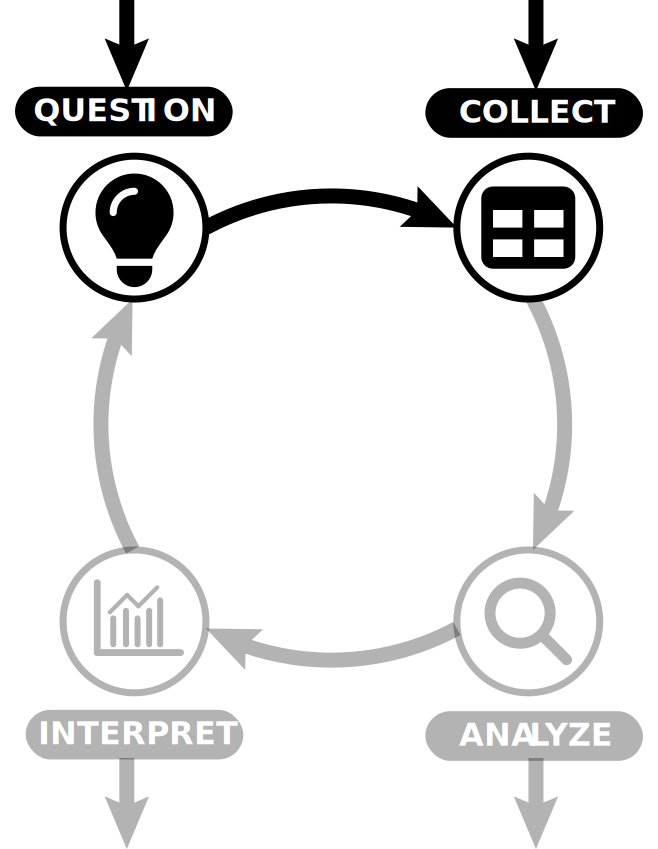
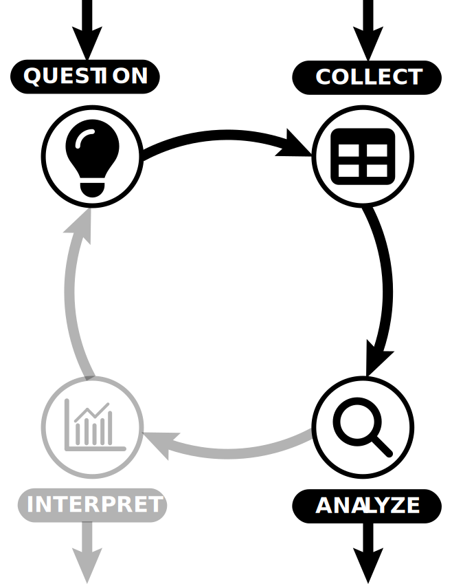
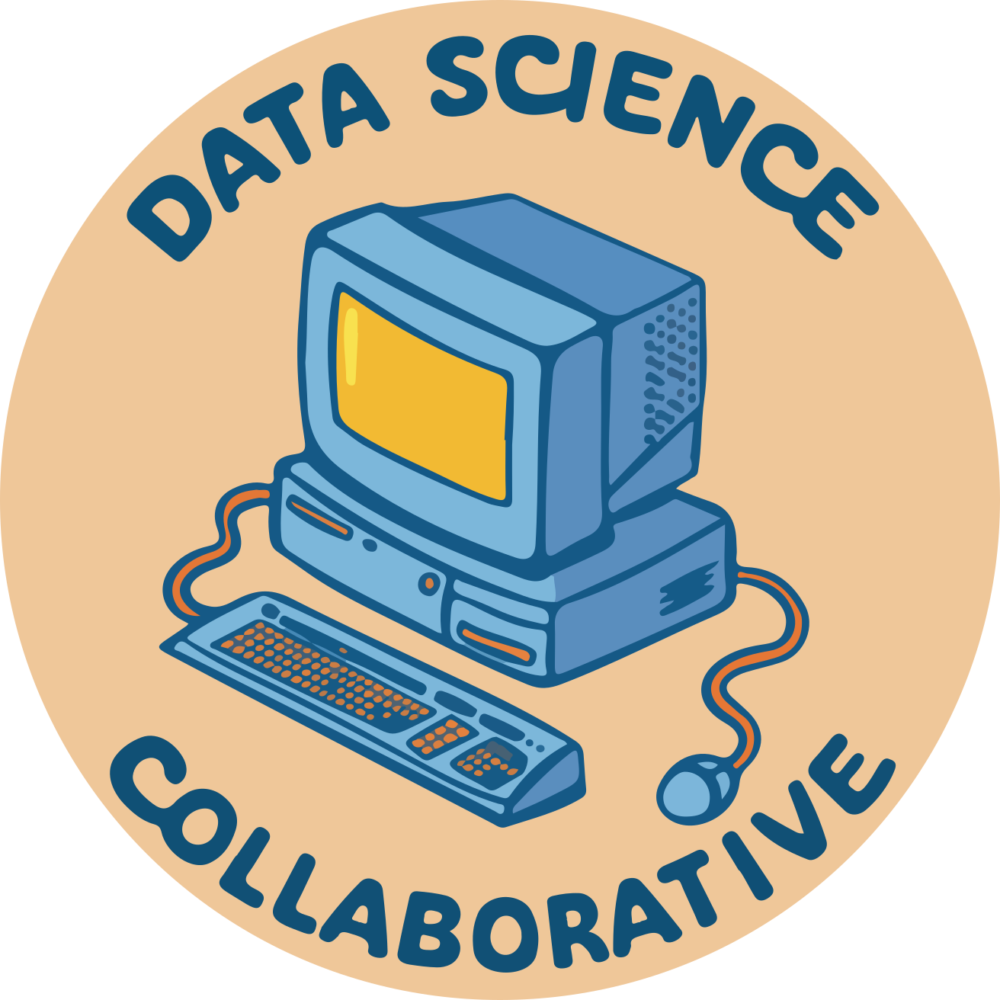

Data Science Collaborative; Spring 2025
Department of Statistics and Applied Probability; UCSB
April 24, 2025

The Data Science Lifecycle (DSL) seeks to describe the general lifecycle of a typical data science project.
Four main stages: questioning, collecting, analyzing, and interpreting.
Lots of variations of the DSL, some with more steps than others.
Main idea: data science projects are highly iterative.

In my opinion, this is a much better representation of the DSL! (Though the graphic is certainly too complex.)
Again, data science is a highly iterative field; we rarely proceed in a linear fashion from start to finish.

Sometimes we’ll begin with a question we want to answer.
E.g. “Has air quality in the US improved over time?”
E.g. “How has the distribution of wealth and income changed since the economic recession of 2008?”


Question: First Pass
Have global temperatures increased in the past decade?
Question: Second Pass
How have global temperatures increased in the past decade?
Question: First Pass
What have been the effects of Global Warming in the past decade?
This is definitely not too specific; in fact, it might be a bit too nonspecific…
Now, this might be a perfectly good question to start with.
Question: First Pass
Do UCLA students tend to, on average, have longer commute times than UCSB students?
The next stage in the DSL is to collect data.
Google is a great place to start!
Another popular site is Kaggle.
If you’re struggling with creating a research question, you can always start by finding an interesting dataset, and then formulating a question from that!
Let’s run through an example of that.

DS Collab; © Ethan P. Marzban